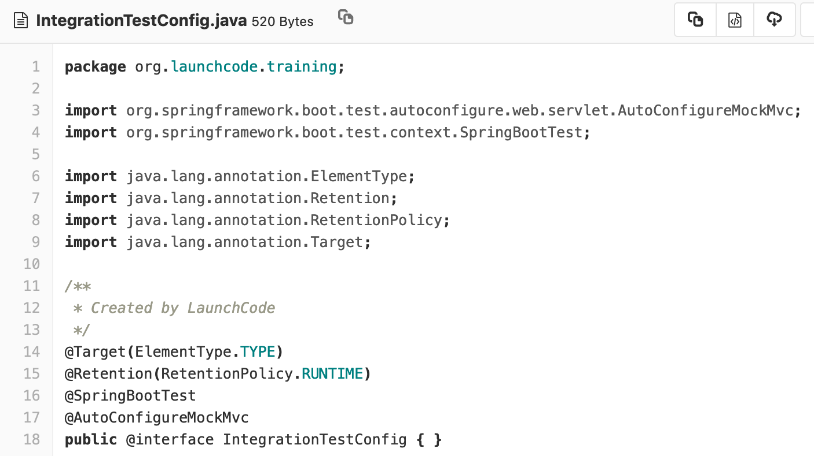
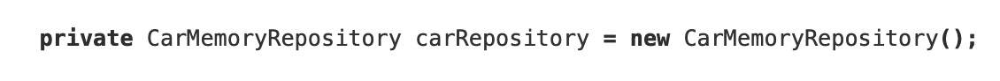
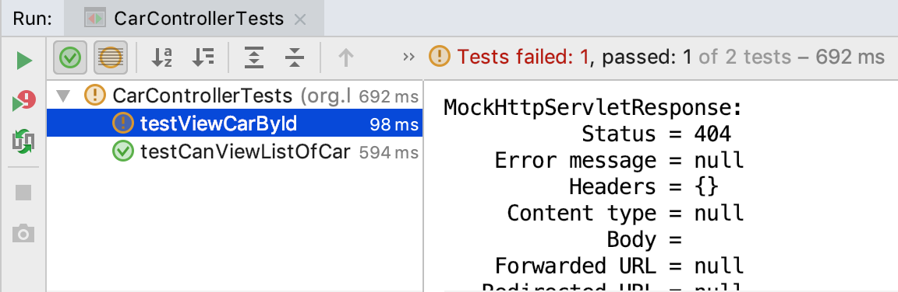
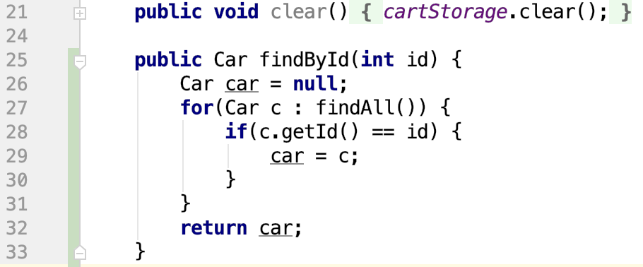
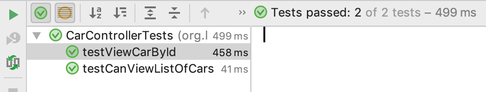

Concept
Overview
With integration testing our objective is to ensure the technologies work together correctly. In this walkthrough we will focus on our Controller class. We want to make sure that when an HTTP Request is made to a specific endpoint, the HTTP Response that is sent back contains the correct information. This will be verifying that our Controller class handles requests, interacts with the Database, creates a POJO (Java Object), and returns a valid HTTP Response.
IntergrationTestConfig
In order to run our Integration Tests within Spring we need to configure a few tools. In your project you have been provided with an IntegrationTestConfig.java file. This file only does a few things, but is necessary for writing our integration tests.

If you are looking for more information you should look up what these different annotations do. The most important to writing our Integration Tests is @AutoConfigureMockMvc. This is Dependency Injection. We are injecting the MockMvc into this interface, and when we inject this interface into our Controller Test we will have access to MockMvc.
MockMvc
To write these tests we will be working with a new library inside of the Spring testing framework: MockMvc.
The MockMvc library will allow us to make HTTP Requests, and then make assert statements against the returned HTTP Response.

In the example picture above. We are using mockMvc to make an HTTP get request to the /car endpoint. Then we are expecting the resulting HTTP Response to have a status code of 200, and the content (HTML/JSON/XML, etc) to contain the string “Mustang”, and contain the string “Camry”. If all three of these conditions are true, this test will pass. If any of those conditions are false, this test will fail.
MemoryRepository
In order to test that our technologies are working together correctly we will need access to the database, so we can fill it with data, and then check our HTTP Responses against that data.
We will be using a JPA Repository to do this. We will talk about JPA Repositories in greater depth later this instruction week.
What you need to know for today is that we will be using a JPA Repository to put dummy data into our database. Every time we create a POJO (Java Object) we will save it to the JPA Repository so it’s stored in our database. In today’s example we will be workign with CarMemoryRepository which is a class provided for you. You can find this Class in the data folder within your source.
We will Autowire it into our test file.

Explore Provided Files
You are provided with quite a few files already. This project extends the Unit Tests, and TDD tests we worked on in previous lessons. We will be making car objects, and testing them.
In your test directory you have a models directory that holds a file that is full of unit tests.
There is also an IntegrationTestConfig.java file, that configures the Integration Tests we will be writing, and there is a CarControllerTest.java file. This is where we will write any integration tests for our CarController. Inside of this file we have an empty test, and we setup MockMvc, and carRepository.
Exploring our Main directory we have a controller directory, data directory, models directory, and our CarApplication.java file. This is where the logic of our MVC app lives.
- models - where our Car class lives
- data - where our JPA Repository lives
- controllers - where the controllers for HTTP Requests live
Looking in our CarController.java file we are provided with 2 routes off of the car mapping.
- /seedData - a route that allows us to put some data into the database
- / - the index of our car route that simply returns a template found at “car/index” and adds all the cars found in the database.
The CarController is what we will be testing with our integration testing.
Write The Tests
Our first test will be for getting a list of all cars by going to the /car route.
Steps:
- Add test cars to the database
- Perform GET request to /car
- Check that HTTP Response contains the information it should

Let’s run our test.

That test passed! We can move on.
Our next test is for checking the result of one single car. Instead of a list of all cars in the database, we want to make sure that one car can be returned when we request a car by a specific ID number. This code has not been provided for us. So following Red-Green-Refactor workflow, we will write our test, watch it fail, write the code to make the test pass, and then refactor if necessary.
Steps:
- Add test car to database
- Perform GET request to /car/<ID>
- Check that the HTTP Response contains the information it should
- Add code to make test pass
- Refactor code if necessary

Let’s run our test.

Our test failed. Luckily MockMvc gives us a lot of information when a test fails. It tells us the HTTP Request that was made, and the HTTP Response. Scroll through this output and read it. The image above shows why this test failed. The HTTP Response that was returned had a status code of 404, but our test is expecting a status code of 200. The resource was not found. This usually means the URL is incorrect. In our case it’s because we have not yet created the controller that will handle this endpoint. We will have to write some code for this endpoint.
We will need to add new code to our CarController.java file to create a new RequestMapping.

In this request mapping we are accessing a path variable. Each car will have a different, and unique ID. A user of this application can request information about a specific car by making an HTTP Request to /car/<car.id> and include in the path the ID number of the car they are requesting. We are using the builtin PathVariable annotation to do this. You will have to import this into the file to use it. Option+enter is the easiest way to do this on a Mac.
We will use the ID number given to us in the PathVariable to look up the car in the database. Using the Car Repository we want to look up one car, with a specific ID number. The method we are calling doesn’t currently exist, so we will need to add it. In CarMemoryRepository we will need to add a little code.

Now that the method exists, we now have access to this code in our CarController.java file. If you switch back to the file you should see the red text on findById() has changed to black text.
Let’s run our test.

Our test failed again! However the output looks a little different. We are now getting an error in resolving our template: “car/view”, template might not exist. In the code we added to our controller we told it to return a template located in the car folder called view.html. Looking at our project structure we don’t have that file.

We will need to add an additional file, with some HTML to pass this test.

Now that the route exists. Let’s rerun our test.

Finally it passed!
We wrote a Red test, we added the code necessary to make the test green, and the next step would be to refactor our code if necessary. We won’t refactor together, but it’s something you will be expected to do in your studio today.